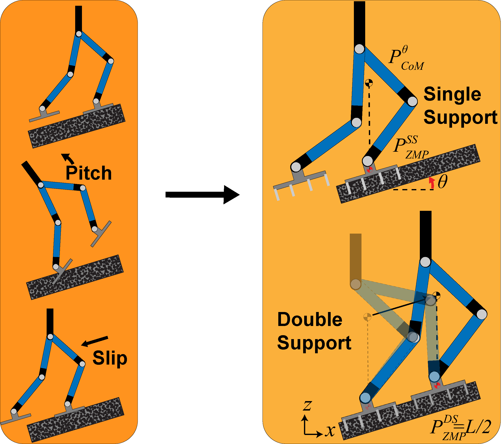
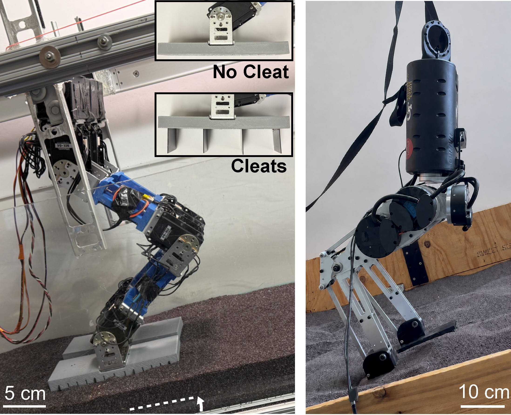
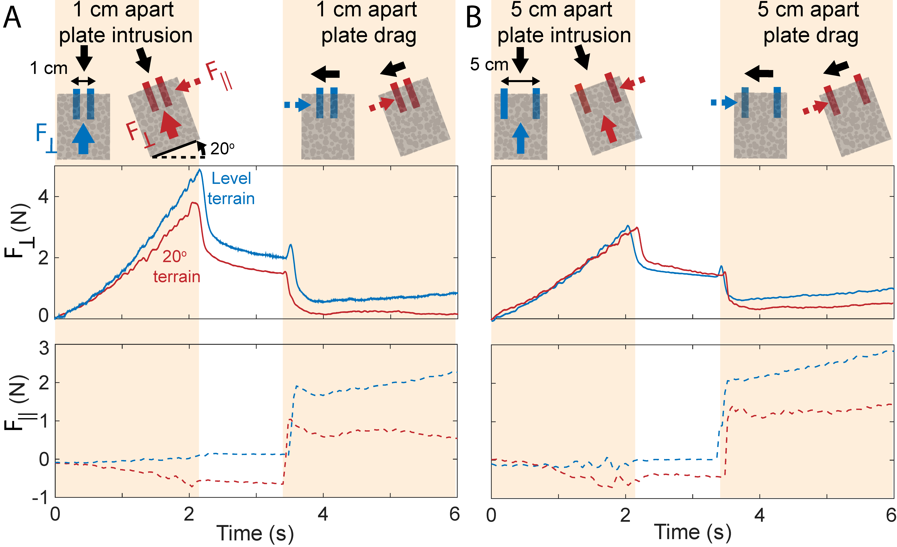
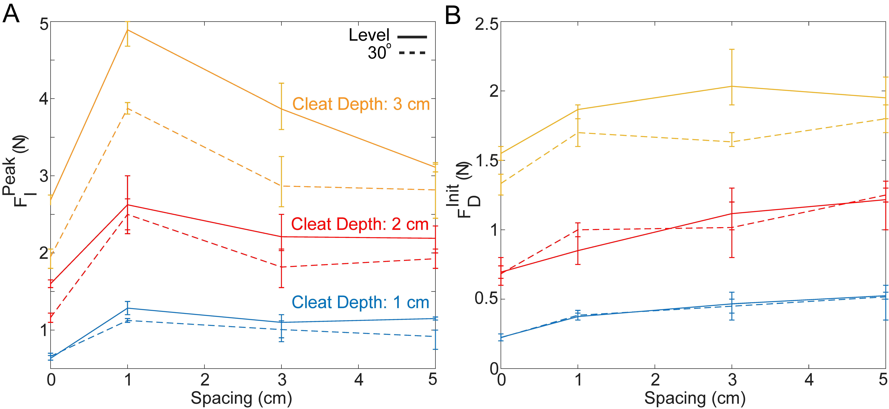
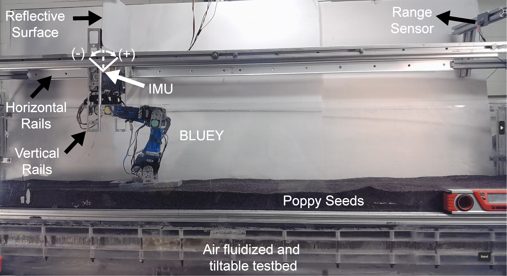
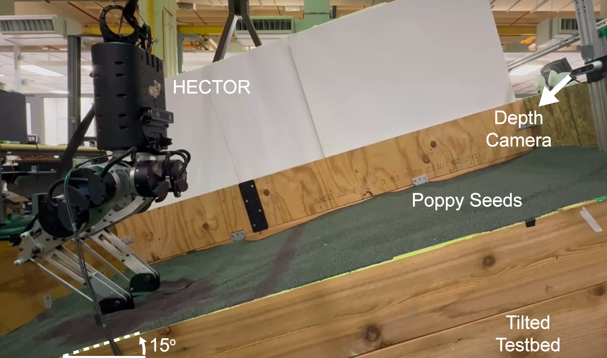
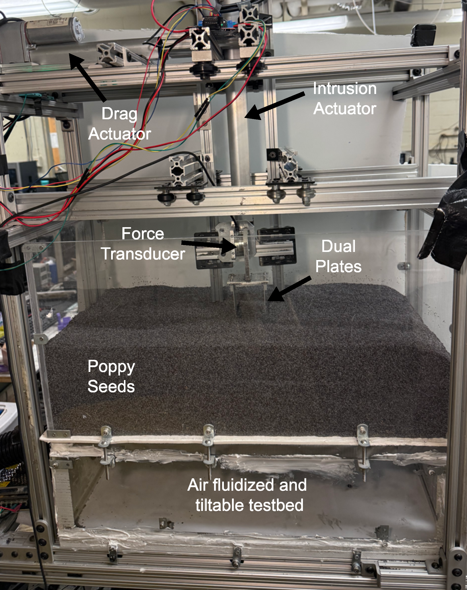

This project investigates how foot-driven terrain manipulation can improve bipedal locomotion on inclined flowable substrates. The study identifies foot-terrain interaction principles that reduce slip, limit excessive substrate yielding, and support more robust uphill locomotion.
Abstract
Bipedal robots are challenging to control because they operate close to instability, where small variations in foot-terrain contact can rapidly destabilize locomotion. On rigid terrain, bipedal robots mitigate this fragility by using well-established contact mechanics and control strategies. On flowable surfaces such as granular slopes, foot contact can induce large surface deformations and solid–fluid–like transitions, coupling terrain effects with robot dynamics, leading to underperformance or failure. This is partly due to the lack of reliable methods to represent the dynamics of flowable terrain, making it difficult to account for terrain effects in locomotion design. Here, we investigate how controlling terrain response can improve bipedal locomotion on granular slopes by studying the terradynamics of ``cleated" feet, thin plates emanating from the foot soles. Systematic studies of a small-scale (1.4 kg) robophysical biped reveal that cleats with sparse and dense spacing lead to excessive terrain yielding and resistance, respectively, degrading performance and leading to failure. An intermediate cleat spacing distributes interaction forces to maintain substrate stresses near (or below) the yield threshold, enabling walking on granular slopes up to 30°. Guided by these principles, we design a foot that actively adjusts cleat depth and accommodates both rigid and granular terrain. We also demonstrate that the principles of effective foot-terrain interaction translate to a larger (15 kg) autonomous biped. Our study presents an alternative to conventional ``body-centric" robot control approaches, which regulate terrain-induced effects through body motion, by instead regulating terrain interactions through ``limb-centric" approach.
Motivation
Legged robots are envisioned for deployment in unstructured environments-from dryland search operations to planetary surfaces where regolith and loose soil dominate the landscape. Yet most bipedal locomotion research has been developed and validated on flat, hard floors. The gap between laboratory performance and field-relevant capability remains wide, and terrain deformability is one of its least-addressed dimensions. Bridging this gap requires rethinking of how robot feet interact with the ground — treating the terrain not as a rigid reaction surface, but as a material whose response can be shaped by design.

Approach
Our study combines controlled robophysical locomotion experiments,
granular intrusion measurements, visual analysis of substrate deformation,
adaptive foot-terrain interaction experiments, and validation on a larger
bipedal platform. Our experiments connect local foot-terrain
mechanics to whole-body locomotion performance.

Results
Robophysical Experiments
Robophysical biped on inclined granular terrain
BLUEY walking up a granular slope of 20 degree slope with different cleated foot configurations. (i) no cleat, (ii) sparse cleat (12 cm), (iii) effective cleat (4 cm), and (iv) dense cleat (1 cm) walking. Middle) Displacement measurements relative to a commanded 100 cm walking distance are shown for each foot. The inset illustrates the pitching angle of the robot for each foot configuration. The gait parameters are kept constant across each trial: stride length of 10 cm, CoM height of 18 cm, and step period of 1 s (see Supplementary Materials for details). The no-cleat case achieves 6 cm walking distance (blue curve); the sparse-cleat fails (red); and the effective (orange) and dense-cleats (purple) reach 82 cm and 67 cm walking distances, respectively. The foot configurations that achieve successful walking exhibit limited pitch angles, whereas sparse cleat spacing leads to pitching failure. Right) Heatmap of BLUEY's slipping under varying cleat depth, spacing, and terrain slope. Each grid component represents the mean slip value of three trials.
Cleat Physics Experiments
Failure Mechanisms
Trailing edge failure with sparse cleats
Insufficient traction failure with sparse cleats
Incomplete placement of dense cleats on level
Success Mechanisms
Effective cleats solidifing slopes
Effective cleats enhancing traction
Dense cleats fully pentrating on slopes
Granular Intrusion and Drag Experiments
Dual plate intrusion and drag experiments.

Testing cleated-foot interaction principles on challenging conditions
Robotic foot with retractable cleats
Retractable cleats
Experiments with the retractable foot mechanism on rigid and granular slopes. A)-B) Robot failures with no and fully extended cleats, respectively. C) Time-lapse of BLUEY walking using the adaptive cleat depth mechanism. The vertical dashed line represents the starting point for all the trials. D) BLUEY displacement, pitch angle, and retractable cleat-foot actuator current reading. The actuated cleats facilitate locomotion on complex surfaces: granular and rigid terrains.
Hector Experiments
HECTOR Experiments
HECTOR locomotion experiments with different foot configurations. A) HECTOR walking with (i) no cleat, (ii) sparse cleat, (iii) effective cleat, and (iv) dense cleat configurations. HECTOR is initiated to walk at the positions depicted by dashed vertical lines in all trials. B) The displacement performance of HECTOR under closed-loop MPC control. The maximum displacement variations of the shaded regions are 20 cm, 12 cm, 4 cm, and 28 cm, for no, sparse, effective, and dense cleats, respectively.
Supplementary Information
Effect of cleat depth on granular forces

Dual-Plate PIV Analysis

Supplementary Figures




Supplementary Notes
This website is intentionally anonymized for review purposes. It does not include author names, affiliations, acknowledgments, lab names, personal links, or identifying repository links.